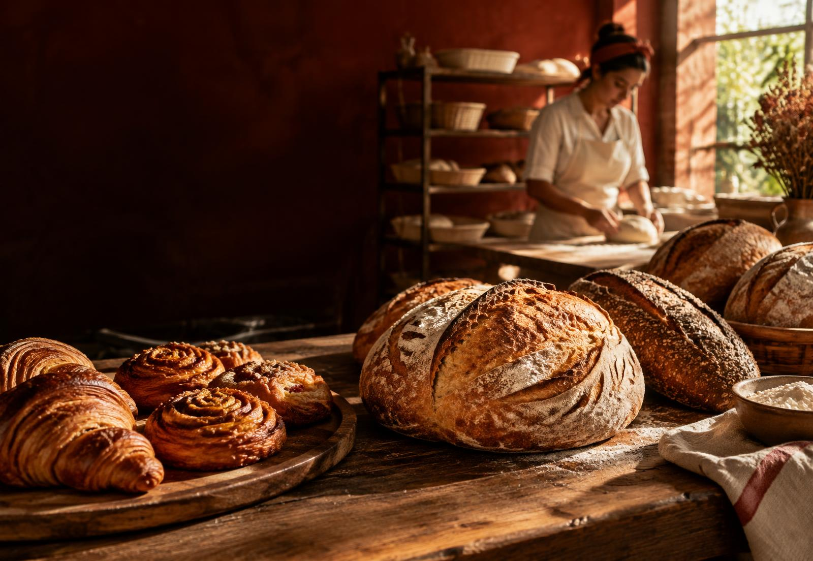

Pão italiano
Fermentação natural e casca crocante
A partir de R$ 24

Pão de verdade, todo dia
Receitas de afeto, ingredientes selecionados e fornadas frescas para deixar a mesa mais gostosa.
Conheça nossos pãesNossa história
Respeitamos o tempo de cada massa. O resultado são sabores honestos, cascas crocantes e aquele aroma que faz qualquer casa parecer mais casa.
Encomendas
Projeto demonstrativo: substitua este botão pelo WhatsApp da padaria.